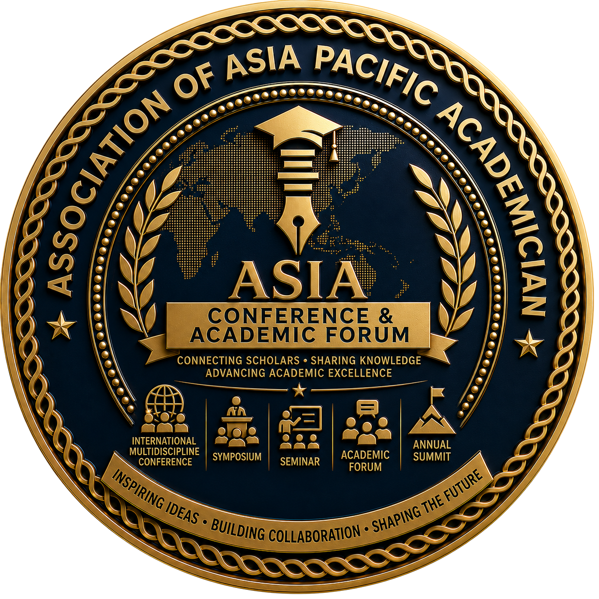

ASIA Conference & Academic Forum
Connecting Scholars. Sharing Knowledge. Advancing Academic Collaboration.
The ASIA Conference & Academic Forum (ASIA-CAF) is the official conference, scholarly engagement, and academic networking body of the Association of Asia Pacific Academician (ASIA). Established to foster intellectual exchange and international collaboration, ASIA-CAF serves as the central platform for organizing conferences, symposiums, academic forums, seminars, workshops, scholarly dialogues, and multidisciplinary knowledge-sharing activities throughout the Asia-Pacific region and beyond.
ASIA-CAF provides an inclusive environment where academics, researchers, professionals, students, policymakers, industry leaders, and institutional partners come together to exchange ideas, present research findings, develop collaborative initiatives, and address regional and global challenges through academic excellence and innovation.
As one of ASIA's strategic bodies, ASIA-CAF promotes interdisciplinary cooperation, strengthens international academic partnerships, supports research dissemination, and contributes to the advancement of education, science, technology, and sustainable development.
"To become the leading multidisciplinary academic conference and scholarly engagement platform in the Asia-Pacific region, connecting global knowledge, fostering innovation, and strengthening international collaboration for the advancement of education, research, and society."
ASIA-CAF is committed to:
Creating trusted platforms for exchanging knowledge, research findings, best practices, and professional experiences across disciplines and countries.
Connecting scholars, universities, research institutions, professional organizations, industries, governments, and international partners into a sustainable academic network.
Facilitating the publication and dissemination of scientific knowledge through conferences, symposiums, proceedings, and scholarly forums.
Strengthening cross-border cooperation that encourages joint research, academic mobility, institutional partnerships, and global engagement.
Encouraging critical thinking, interdisciplinary discussion, and evidence-based solutions for regional and global issues.
Providing opportunities for students, early-career researchers, and young academics to develop research capacity, international exposure, and professional networks.
ASIA-CAF serves as the official academic engagement platform responsible for:
A comprehensive portfolio of academic engagement programs:
ASIA-CAF is not merely an event organizer. It is an integrated academic conference ecosystem that connects the entire scholarly communication lifecycle.
ASIA-CAF supports conferences and academic activities across all multidisciplinary fields represented by ASIA, including:
Strategic Commitment: ASIA-CAF is committed to creating an inclusive, innovative, and internationally respected academic ecosystem where scholars, researchers, professionals, institutions, and policymakers collaborate to generate knowledge, inspire innovation, and produce meaningful solutions for the sustainable development of the Asia-Pacific region and the global community.